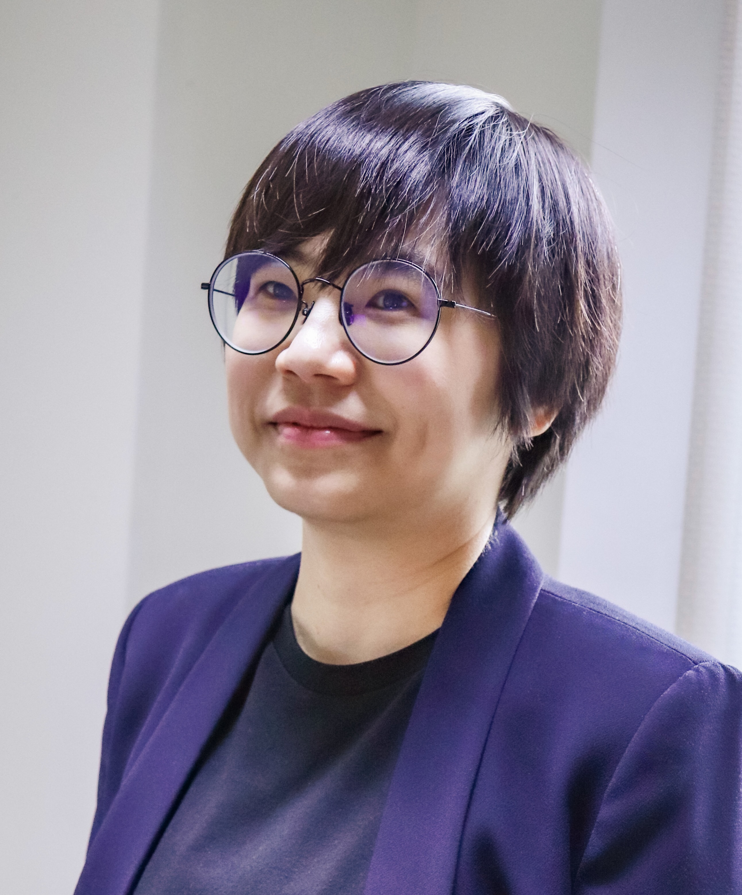

ACM First International Workshop on Analytics, Telemetry, and Cybersecurity for HPCC (WATCH 2025)
CFP: https://https://watch-miniconf.github.io/index-CFP.html
Email: WATCH.miniconf@gmail.com
In conjunction with ACM CCS 2025,
October 17, Taipei, Taiwan Workshop Program
Welcome Keynote Speech Keynote Presentation Break Technical Session 1
ROSCA: Robust and Scalable Security Alert Correlation and Prioritisation using the MITRE ATT&CK Framework
CUPcap: Non-intrusive GPU Activity Capture for Security Auditing on CUDA Platforms
Lunch Technical Session 2
DPU-based Optimization of GPU Data Paths through Real-time Diagnostics and On-Demand Control
Asynchronous Information Flow Tracking with Neural Network-based Acceleration
A Lightweight Defense for Backdoor Attacks via Data Self-Purification
Closing
Program order subject to change.
WATCH 2025 Co-Chairs: Massimo Cafaro, Eric Chan-Tin, Jerry Chou, Jinoh Kim
9:20am - 9:30am
Jerry Chou
9:30am - 10:30am
Dr. Hsu-Chun Hsiao, National Tsing Hua University

Title: Fortifying the Digital Backbone for a Resilient Future
Abstract: Cyber resilience is crucial in a world facing significant
threats to digital infrastructure, ranging from physical cable cuts to sophisticated cyber attacks.
This keynote will explore how to build this resilience from the network layer to the application
layer, highlighting the importance of real-time in-network monitoring and advanced end-to-end security
techniques. The first part of the talk will focus on network infrastructure resilience, which is
crucial for protecting network protocols and traffic flows from large-scale attacks. We will review
the vulnerabilities of current protocols, such as BGP routing, in the face of state-level attackers,
and present our research on advanced DDoS defenses, including methods for detecting anomalous flow
at line speed. Next, we will shift our focus to resilience at the application level, ensuring that
information exchange remains both authentic and private. We will present solutions that include
privacy-preserving group messaging protocols and automated vulnerability detection. Finally, we
will explore the role of AI in cyber resilience. The vast amount of data generated in high-performance
communication and computing environments demands rapid threat detection and analysis for resilience.
We will discuss how AI can be used to automate vulnerability discovery, enable robust website
fingerprinting, and process large quantities of audit logs and threat reports.
Bio: Dr. Hsu-Chun Hsiao is an Associate Professor in Computer Science and Information
Engineering and the Graduate Institute of Networking and Multimedia at National
Taiwan University. She completed her B.S. and M.S. at National Taiwan University
in 2006 and 2008, respectively, and her Ph.D. at Carnegie Mellon University in 2014.
Her research focuses on building practical security solutions with theoretical underpinnings.
She is a recipient of several awards, including Young Scholar Fellowship and
Ta-You Wu Memorial Award from Taiwan Ministry of Science and Technology, IEEE S&P
Test-of-Time Award, and PETS Best Artifact Award.
10:30am - 11:00am
Chair: Jerry Chou
11:00am - 12:00pm
Rémi Garcia (Université de Lorraine, CNRS, Inria, LORIA), Abdelkader Lahmadi (Université de Lorraine, CNRS, Inria, LORIA), Pierre-François Gimenez (Univ. Rennes, Inria, IRISA), Charles Sala (Hospices Civils de Lyon)
Pin-Yi Kuo (National Tsing Hua University), Jerry Chou (National Tsing Hua University)
12:00pm - 1:30pm
Chair: Jerry Chou
1:30pm - 3:00pm
Yong Xuan Huang (National Tsing Hua University Taiwan), Ming-Hung Chen (IBM Research USA), I-Hsin Chung (IBM Research USA), Jerry Chou (National Tsing Hua University Taiwan)
Hong-Wei Li (Research Center for Information Technology Innovation, Academia Sinica), Yun-Guan Chen (National Yang Ming Chiao Tung University), Hsu-Chieh Hsiao (National Yang Ming Chiao Tung University), Yu-Sung Wu (National Yang Ming Chiao Tung University), Yennun Huang (Research Center for Information Technology Innovation, Academia Sinica), You-Wei Juang (National Yang Ming Chiao Tung University), Chia-Chen Yeh (National Yang Ming Chiao Tung University)
Yukai Xu (Kyushu University, Japan), Yujie Gu (Kyushu University, Japan), Kouichi Sakurai (Kyushu University, Japan)
3:00pm - 3:10pm